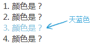
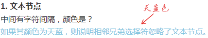
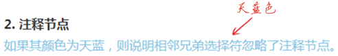
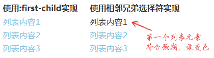
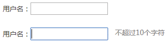

首页 > 编程笔记
CSS相邻兄弟选择器（+）详解
相邻兄弟选择器也是非常实用的选择符，它被 IE7 及以上版本的浏览器支持。它可以用于选择相邻的兄弟元素，但只能选择后面一个兄弟元素。我们将通过一个简单的例子快速了解一下相邻兄弟选择器，HTML 和 CSS 代码分别如下：
可以看到，.cs-li 后面一个 <li> 元素的颜色变成天蓝色了，结果符合我们的预期，因为 .cs-li+li 表示选择 .cs-li 元素后面一个相邻且标签是li的元素。如果这里的选择器是 .cs-li+p，则不会有元素被选中，因为 .cs-li 后面是 <li> 元素，而不是 <p> 元素。
由此，我们可以得出，相邻兄弟选择器会忽略文本节点和注释节点，只认元素节点。
实际上，此方法的适用范围比 :first-child 更广一些，例如，当容器的第一个子元素并非 .cs-li 的时候，相邻兄弟选择器这个方法依然有效，而 :first-child 此时却无效了，因为没有任何.cs-li元素是第一个子元素了，也就无法匹配 :first-child。用实例说明，有如下 HTML 代码：
可以看到，:first-child 的所有列表元素都是天蓝色，匹配失败，而相邻兄弟选择器实现的第一个列表元素的颜色依然是黑色，而非天蓝色，说明正确匹配了非首列表元素。可见，相邻兄弟选择器的适用范围更广一些。
举一个简单的例子，当我们聚焦输入框的时候，如果希望显示后面的提示文字，可以借助相邻兄弟选择器轻松实现。原理很简单：把提示文字预先埋在输入框的后面，当触发 focus 行为时，提示文字即可显示。HTML 和 CSS 代码分别如下：
<ol>
<li>1. 颜色是？</li>
<li class="cs-li">2. 颜色是？</li>
<li>3. 颜色是？</li>
<li>4. 颜色是？</li>
</ol>
.cs-li + li {
color: skyblue;
}
测试结果如下图所示。

图 1 相邻兄弟选择器测试结果截图
图 1 相邻兄弟选择器测试结果截图
可以看到，.cs-li 后面一个 <li> 元素的颜色变成天蓝色了，结果符合我们的预期，因为 .cs-li+li 表示选择 .cs-li 元素后面一个相邻且标签是li的元素。如果这里的选择器是 .cs-li+p，则不会有元素被选中，因为 .cs-li 后面是 <li> 元素，而不是 <p> 元素。
相邻兄弟选择器的相关细节
实际开发时，HTML 不一定都是整齐的标签元素，此时，相邻兄弟选择器又当如何表现呢？1) 文本节点与相邻兄弟选择器
CSS代码很简单：
h4 + p {
color: skyblue;
}
然后我们在 <h4> 和 <p> 元素之间插入一些文字，看看 <p> 元素的颜色是否还是天蓝色？
<h4>1. 文本节点</h4> 中间有字符间隔，颜色是？ <p>如果其颜色为天蓝，则说明相邻兄弟选择器忽略了文本节点。</p>测试结果如下图所示，<p> 元素的颜色依然为天蓝色，这说明相邻兄弟选择器忽略了文本节点。

图 2 相邻兄弟选择器忽略文本节点效果截图
图 2 相邻兄弟选择器忽略文本节点效果截图
2) 注释节点与相邻兄弟选择器
CSS代码很简单：
h4 + p {
color: skyblue;
}
然后我们在 <h4> 和 <p> 元素之间插入一段注释，看看 <p> 元素的颜色是否还是天蓝色？<h4>2. 注释节点</h4> <!-- 中间有注释间隔，颜色是？ --> <p>如果其颜色为天蓝，则说明相邻兄弟选择器忽略了注释节点。</p>测试结果如下图所示，<p> 元素的颜色依然为天蓝色，说明相邻兄弟选择器忽略了注释节点。

图 3 相邻兄弟选择器忽略注释节点效果截图
图 3 相邻兄弟选择器忽略注释节点效果截图
由此，我们可以得出，相邻兄弟选择器会忽略文本节点和注释节点，只认元素节点。
实现类似:first-child伪类的效果
相邻兄弟选择器可以用来实现类似 :first-child 伪类的效果。例如，我们希望除第一个列表以外的其他列表都有 margin-top 属性值，首先可以想到的就是 :first-child，如果无须兼容 IE8 浏览器，可以这样实现：
.cs-li:not(:first-child) { margin-top: 1em; }
如果需要兼容 IE8 浏览器，则可以分开处理：
.cs-li { margin-top: 1em; }
.cs-li:first-child { margin-top: 0; }
下面介绍另一种方法，那就是借助相邻兄弟选择器，如下：
.cs-li + .cs-li { margin-top: 1em; }
由于相邻兄弟选择器只能匹配后一个元素，因此第一个元素不会被匹配，于是自然而然实现了非首列表元素的匹配。实际上，此方法的适用范围比 :first-child 更广一些，例如，当容器的第一个子元素并非 .cs-li 的时候，相邻兄弟选择器这个方法依然有效，而 :first-child 此时却无效了，因为没有任何.cs-li元素是第一个子元素了，也就无法匹配 :first-child。用实例说明，有如下 HTML 代码：
<div class="cs-g1">
<h4>使用:first-child实现</h4>
<p class="cs-li">列表内容1</p>
<p class="cs-li">列表内容2</p>
<p class="cs-li">列表内容3</p>
</div>
<div class="cs-g2">
<h4>使用相邻兄弟选择器实现</h4>
<p class="cs-li">列表内容1</p>
<p class="cs-li">列表内容2</p>
<p class="cs-li">列表内容3</p>
</div>
.cs-g1 和 .cs-g2 中的 .cs-li 分别使用了不同的方法实现，如下：
.cs-g1 .cs-li:not(:first-child) {
color: skyblue;
}
.cs-g2 .cs-li + .cs-li {
color: skyblue;
}
对比测试结果如下图所示。

图 4 分别使用:first-child与相邻兄弟选择器得到的测试结果对比
图 4 分别使用:first-child与相邻兄弟选择器得到的测试结果对比
可以看到，:first-child 的所有列表元素都是天蓝色，匹配失败，而相邻兄弟选择器实现的第一个列表元素的颜色依然是黑色，而非天蓝色，说明正确匹配了非首列表元素。可见，相邻兄弟选择器的适用范围更广一些。
众多高级选择器技术的核心
相邻兄弟选择器最有价值的应用还是配合诸多伪类以低成本实现很多实用的交互效果，它是众多高级选择器技术的核心。举一个简单的例子，当我们聚焦输入框的时候，如果希望显示后面的提示文字，可以借助相邻兄弟选择器轻松实现。原理很简单：把提示文字预先埋在输入框的后面，当触发 focus 行为时，提示文字即可显示。HTML 和 CSS 代码分别如下：
用户名：<input><span class="cs-tips">不超过10个字符</span>
.cs-tips {
color: gray;
margin-left: 15px;
position: absolute;
visibility: hidden;
}
:focus + .cs-tips {
visibility: visible;
}
无须任何 JavaScript 代码参与，效果如下图所示，上图为失焦时的效果图，下图为聚焦时的效果图。

图 5 失焦和聚焦时的效果图
图 5 失焦和聚焦时的效果图
关注公众号「站长严长生」，在手机上阅读所有教程，随时随地都能学习。内含一款搜索神器，免费下载全网书籍和视频。

微信扫码关注公众号